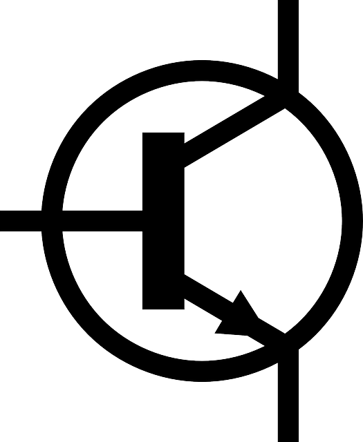

Unidad 2: Electrónica analógica
2.1 Dispositivos activos
Es un componente electrónico capaz de excitar los circuitos o de realizar ganancias o control del mismo. Son, en general, los generadores eléctricos y ciertos componentes semiconductores. Los componentes activos semiconductores son derivados del diodo de Fleming y del triodo de Lee de Forest. Primero se inventaron las válvulas, lo cual permitió desarrollar dispositivos electrónicos como la radio y el televisor. Luego se desarrollaron los semiconductores, los cuales luego dieron paso a los circuitos integrados, entre ellos los circuitos programables como los microprocesadores. En la actualidad existe un número elevado de componentes activos, siendo usual, que un sistema electrónico se diseñe a partir de uno o varios componentes activos cuyas características lo condicionará. Esto no sucede con los componentes pasivos.
Amplificador operacional
Un amplificador operacional (A.O.) es un circuito electrónico (normalmente se presenta como circuito integrado) que tiene dos entradas y una salida. La salida es la diferencia de las dos entradas multiplicada por un factor (G) (ganancia): Vout = G·(V+ - V-)
Diodo
Un diodo es un dispositivo que permite el paso de la corriente eléctrica en una única dirección. De forma simplificada, la curva característica de un diodo consta de dos regiones, por debajo de cierta diferencia de potencial, se comporta como un circuito abierto (no conduce), y por encima de ella como un circuito cerrado con muy pequeña resistencia eléctrica. Debido a este comportamiento, se les suele denominar rectificadores, ya que son dispositivos capaces de convertir una corriente alterna en corriente continua.
Diodo Zener
Un diodo Zener, es un diodo de silicio que se ha construido para que funcione en las zonas de rupturas. Llamados a veces diodos de avalancha o de ruptura, el diodo zener es la parte esencial de los reguladores de tensión casi constantes con independencia de que se presenten grandes variaciones de la tensión de red, de la resistencia de carga y temperatura.

Pila
Se llama ordinariamente pila eléctrica a un dispositivo que genera energía eléctrica por un proceso químico transitorio, tras de lo cual cesa su actividad y han de renovarse sus elementos constituyentes, puesto que sus características resultan alteradas durante el mismo. Se trata de un generador primario. Esta energía resulta accesible mediante dos terminales que tiene la pila, llamados polos, electrodos o bornes. Uno de ellos es el polo positivo o ánodo y el otro es el polo negativo o cátodo.
Transistor
El transistor es un dispositivo electrónico semiconductor que cumple funciones de amplificador, oscilador, conmutador o rectificador. El transistor consta de un sustrato (usualmente silicio) y tres partes dopadas artificialmente que forman dos uniones bipolares, el emisor que emite portadores, el colector que los recibe o recolecta y la tercera, que está intercalada entre las dos primeras, modula el paso de dichos portadores
TRIAC
Un TRIAC o Triodo para Corriente Alterna es un dispositivo semiconductor, de la familia de los transistores. La diferencia con un tiristor convencional es que éste es unidireccional y el TRIAC es bidireccional. De forma coloquial podría decirse que el TRIAC es un interruptor capaz de conmutar la corriente alterna. Su estructura interna se asemeja en cierto modo a la disposición que formarían dos SCR en antiparalelo. Posee tres electrodos: A1, A2 (en este caso pierden la denominación de ánodo y cátodo) y puerta. El disparo del TRIAC se realiza aplicando una corriente al electrodo puerta.
2.1.1 Dispositivos semiconductores tipo P y tipo N
Los semiconductores son elementos que tienen una conductividad eléctrica inferior a la de un conductor metálico pero superior a la de un buen aislante. El semiconductor más utilizado es el silicio, que es el elemento más abundante en la naturaleza, después del oxígeno. Otros semiconductores son el germanio y el selenio.
Tipos de semiconductores
Semiconductores intrínsecos: poseen una poseen una conductividad el conductividad eléctrica f ctrica fácilmente controlable y, al combinarlos cilmente controlable y, al combinarloscorrectamente, pueden actuar como interruptores, amplificadores o dispositivos de almacenamiento. Ejemplo: Si y Ge puros.
Semiconductores extrínsecos: estos se forman al estos se forman al agregar, intencionadamente, a un semiconductor intr a un semiconductor intrínseco sustancias dopantes.
Union P-N
Antes de definir a una unión p-n, es conveniente mencionar que un semiconductor intrínseco es un material formado por un solo tipo de átomos o de elementos químicos, con una cantidad insignificante de impurezas. Mientras que un semiconductor extrínseco es un material al cual se le han agregado átomos de otro elemento químico con una cantidad diferente de electrones de valencia. Así, un semiconductor tipo n tiene átomos de impureza con una cantidad mayor de electrones de valencia y estos átomos aportan electrones a la banda de conducción. En un semiconductor tipo p los átomos de impureza tienen una cantidad menor de electrones de valencia y aportan huecos a la banda de valencia.
Ahora bien, a la unión entre dos regiones de un material semiconductor contaminadas con diferentes impurezas, es decir, una región tipo p y otra región tipo n, se le denomina unión p-n. A temperatura de 0º K, los electrones donadores de la región n y los huecos de la región p se encuentran unidos a sus átomos.
Al incrementarse la temperatura se liberan algunos electrones y huecos de sus átomos de impureza y se crean portadores libres que forman una corriente de difusión, los electrones de la región n se desplazan hacia la región p y viceversa. Este flujo de portadores crea iones positivos en la región n y negativos en la región p, formándose un campo eléctrico en la unión. Este campo eléctrico se opone a la difusión de más portadores y se genera en la unión una delgada región de agotamiento de portadores libres, como se muestra en la figura.
El campo eléctrico formado en la unión establece un potencial interno Vint entre las dos regiones que provoca el desalineamiento de sus bandas de energía. Mientras mayor sea la concentración de impurezas y la temperatura, mayor será el potencial interno y el desalineamiento de las bandas. Sin embargo, ya que el nivel de Fermi es una variable termodinámica, en estas condiciones de equilibrio térmico tal nivel de Fermi se mantiene constante a través de la unión.
Al polarizar directamente la unión p-n se reduce el potencial interno Vint y debido a que se pierde el equilibrio ya no se habla de un nivel de Fermi, sino de un cuasi nivel de Fermi, separándose cada uno de los niveles en proporción al potencial externo aplicado [Peyghambarian, 1993]. Si el potencial externo aplicado es tal que el potencial interno no puede evitar que los portadores mayoritarios crucen la unión, estos portadores se inyectan a la unión y se establece un flujo de corriente.
Por otro lado, al polarizar inversamente la unión pn, el potencial interno se incrementa y evita el flujo de corriente.
2.1.2 Diodo semiconductor
El Diodo es un componente electrónico que solo permite el paso de la corriente en un sentido (por eso es un semiconductor, por que es conductor solo en determinadas condiciones).
Si el ánodo (triángulo en el símbolo y patilla de la parte negra en el diodo real) se conecta al polo positivo y el cátodo (Raya en el símbolo y patilla de la franja gris en el diodo real) al negativo, entonces por el diodo podrá circular corriente, sería similar a un interruptor cerrado. Así conectado, se dice que está polarizado directamente. Si lo conectamos al revés la corriente no pasará a través del diodo, será como un interruptor abierto. Fíjate que en el diodo real, para identificar el cátodo, es la parte de la banda de color gris del diodo.
El diodo polariado directamente permite el flujo a través de él de los electrones, o lo que es lo mismo permite el paso de la corriente eléctrica. En polarización inversa no permite el paso de lo electrones por él. Arriba puedes ver la gráfica típica de funcionamiento de un diodo. Para tensiones con polarización directa del diodo, según aumentamos la tensión en los bornes del diodo (patillas o extremos) va aumentando la corriente que circula por él. Lógicamente el diodo tendrá una tensión máxima de trabajo que no se podrá sobrepasar porque se quemaría. Para tensiones con polarización negativa no conduce y por lo tanto, por mucho que aumentemos la tensión no se producirá corriente alguna a través del diodo.
Los diodos semiconductores tienen la valiosa propiedad de que los electrones solamente fluyen en una dirección a través de ellos y, como resultado, actúan como un rectificadores. Son la estructura fundamental de los semiconductores y muchos otros componentes electronicos se fabrican teniendo como base a los diodos. Los diodos tienen una estructura electrónica llamada Union PN, es decir son la unión de un material semiconductor llamado N con otro llamado P.
Solo hay unos diodos especiales que conducen en tensiones contrarias, es decir polarizados inversamente, son los llamados diodos zener.
Otro tipo de diodos son los Diodos Led, que emiten luz cuando están polarizados directamente, pero la mayoría de los diodos se utilizan como rectificadores de corriente, un puente de diodos (varios diodos conectados).
Este rectificador de diodos es muy utilizado en las Fuentes de Alimentación. Una onda senoidal alterna a la entrada se convierte en una onda continua rectificada por los diodos.
2.1.3 Transistores bipolares
El transistor de unión bipolar (del inglés bipolar junction transistor, o sus siglas BJT) es un dispositivo electrónico de estado sólido consistente en dos uniones PN muy cercanas entre sí, que permite aumentar la corriente y disminuir el voltaje, además de controlar el paso de la corriente a través de sus terminales. La denominación de bipolar se debe a que la conducción tiene lugar gracias al desplazamiento de portadores de dos polaridades (huecos positivos y electrones negativos), y son de gran utilidad en gran número de aplicaciones; pero tienen ciertos inconvenientes, entre ellos su impedancia de entrada bastante baja.
Los transistores bipolares son los transistores más conocidos y se usan generalmente en electrónica analógica aunque también en algunas aplicaciones de electrónica digital, como la tecnología TTL o BICMOS.
Un transistor de unión bipolar está formado por dos Uniones PN en un solo cristal semiconductor, separados por una región muy estrecha. De esta manera quedan formadas tres regiones:
Construccion
Operación del BJT
Base Común
Región del corte
Región de saturación
Alfa (α)
Emisor Común
La configuración de emisor común es la más usada. En él, el transistor actúa como un amplificador de la corriente y de la tensión. Aparte de los efectos de amplificación, también invierte la tensión de señal, es decir, si la tensión es tendente a positiva en la base pasa a ser tendente a negativa en el colector; pero, como estos efectos se producen con la corriente alterna.
El valor de la corriente de base va a depender del valor de la resistencia RB, la corriente que circula por el colector, IC, depende de la corriente de base, IB, como hemos visto con la formula IC = b . IB; IC es mucho más grande que IB y ese aumento viene dado por b , que es un parámetro característico del transistor.
Al pasar la corriente por RC se va a producir una caída de potencial; luego, la tensión que obtengamos a la salida, también va a depender del valor de esta resistencia. Podemos colocar una resistencia en el emisor, que llamaremos RE, que va a perjudicar mucho la amplificación de tensión, pero va a hacer que el transistor sea mucho más estable y no le afecten los cambios de la temperatura.
Colector Común
Se utiliza principalmente para acoplamiento de impedancias, ya que tiene una alta impedancia de entrada y una baja de salida, lo contrario de las configuraciones anteriores.

Del circuito de arriba es fácil obtener la relación que existe entre la corriente de colector Ic y la tensión colector-emisor VCE del transistor, aplicando la ley de Kirchoff resulta:
Vcc = VCE + IC . RCEsta expresión se conoce como ecuación de la recta de carga. En ella Vcc y RC son constantes, y VCE e IC son las variables. La intersección entre esta recta de carga con la curva característica de salida del transistor determina el punto de reposo Q. Para trazar la recta en el plano IC = f (VCE) es suficiente con establecer los puntos de corte con los ejes de coordenadas. Cuando la corriente de colector es cero IC = 0, la tensión colector-emisor es igual al potencial del generador VCE = Vcc:
IC = 0; VCE = VccPor otro lado, cuando la tensión colector-emisor es igual a cero VCE = 0, la corriente de colector vale el potencial del generador entre la resistencia de colector IC = Vcc/RC:
VCE = 0; IC = Vcc/RCEn la figura se muestra el circuito de polarización y la recta de carga estática con el punto de reposo Q que representa la intersección de esta recta con la curva IB correspondiente. El valor de la corriente de base IB se puede calcular aplicando la ley de Kirchoff al circuito de entrada o de base, así tenemos:
Vcc = VBE + IB . RBSabemos que el transistor entre base-emisor se comporta como un diodo, así que la tensión base-emisor para el silicio suele ser de 0,7 V, es decir:
VBE = 0,7 VEntonces para un dado valor constante de la fuente de alimentación Vcc tenemos que la corriente de base solo depende de RB y vale:
IB = (Vcc – 0,7V)/ RBSabemos también que existe una relación entre las tres corrientes del transistor:
IC = β.IBDe la 2ª ley de Kirchoff:
IE = IC + IB = (β+1).IBLa ganancia de corriente del transistor para continua se conoce como β o hFE, y no tiene unidades ya que relaciona IC/IB.
2.1.4 Tiristores SRC, DIAC, TRIAC
Un tiristor es un dispositivo conmutador biestable que tiene la propiedad de pasar rápidamente al esta "ON"(encendido) para una plena corriente de trabajo cuando recibe un pulso momentáneo de corriente en su terminal de control, y sólo puede ser puesto en "OFF"(apagado) con la interrupción de la corriente principal de trabajo, interrumpiendo el circuito o haciendo circular una corriente de sentido contrario. Los tiristores son usualmente dispositivos de mediana y de alta potencia. Son el equivalente sólido de los interruptores mecánicos, por lo cual dejan pasar plenamente o bloquear por completo en paso de la corriente de trabajo, sin niveles intermedios; o todo, o nada.
Al grupo de los tiristores pertenecen dispositivos tales como el DIAC, equivalente a dos diodos zener puestos en serie pero en sentidos inversos, o sea que sólo conduce corrientes cuando éstas alcanzan cierto voltaje, así sean alternas; el SCR, un rectificador de conducción controlada; el TRIAC, equivalente a dos SCR en contraparalelo.
SCR (Rectificador Controlado de Silicio)
Este es un pequeño dispositivo de tres terminales, que hacen el mismo trabajo semicondudtor de un diodo normal(deja pasar corriente en un solo sentido), pero con la diferencia de que en éste se puede controlar el momento en el cual pueden comenzar a pasar los electrones.
Al primer terminal se le denomina Cátodo, y es utilizado como entrada de corriente. El segundo sirve de salida y se le llama Anodo y el tercero es el Gate, o terminal de control para el paso de corriente cátodo - ánodo. El gate, llamado también terminal de arranque o encendido del tiristor, sólo sirve para iniciar el paso de corriente entre los otros dos terminales, lo que logra con una corriente muy baja(unos 20 miliamperios).
DIAC (Diodo Interruptor de Corriente Alterna)
Este es un dispositivo controlado por voltaje, el cual se comporta como dos diodos zener puestos en contraparalelo, como ya lo digimos: cuando el voltaje de cualquier polaridad entre sus dos terminales excede el valor especificado, entra en avalancha y disminuye su resistencia interna a un valor muy bajo. Esto significa que, si es colocado en paralelo con la salida de una fuente de corriente alterna podrá recortar todos los picos positivos y negativos que pasen del voltaje del umbral del diac.
Si es puesto en serie, solamente dejará pasar corriente cuando lleve más tensión que la del gatillado para triacs en circuitos de corriente alterna. El dispositivo tiene un rango simétrico de conmutación(en ambos sentidos) de 20 a 40 voltios, tensión que usualmente excede el punto de umbral del gate de los triacs, de tal forma que estos trabajan siempre en un nivel seguro.
TRIAC
El diseño de los primeros TRIACs fue la respuesta a la necesidad industrial de dispositivos tiristores que pudieran controlar en fase todo el ciclo de una onda de corriente alterna, incorporando las funciones de 2 SCRs dentro de una sola pastilla semiconductora, y ambos controlados por un solo gate. Las características de compuerta(gate) del TRIAC son muy diferentes de aquellas para dos SCR en contraparalelo, para los SCR, se debe aplicar una señal positiva de control entre el Gate 1 y el terminal principal 1 cuando el terminal Principal 1 es negativo, y entre el Gate 2 y el terminal Principal 2 sea negativo. Este método de operación requiere de dos circuitos separados de compuerta.
En el TRIAC, el Gate 1 y el Gate 2 están conectados juntos y se pueden operar con solamente un circuito de control conectado entre las compuertas y el terminal Principal 1. El modo más fácil de gatillado para control de corriente alterna, se obtiene polarizando positivamente el terminal de compuertas cuando el Terminal Principal 1 sea positivo. En otras palabras, par poner en conducción en ambos sentidos al TRIAC basta con darle al gate un poco de señal de la misma corriente(polaridad) que haya en ese momento en el Terminal Principal 2.
Verificación y chequeo de tiristores
Si las características de voltaje y corriente de trabajo del tiristor lo permiten, puedes armar un crcuito para la comprobación del estado y la identificación del dispositivo(el ciruito de comprobación lo puedes ver en el indice). Cuando la bombilla enciende a plena luz es porque está circulando la onda completa de la corriente alterna, esto significa que se trata de un TRIAC. Cuando se trata de un SCR la bombilla sólo suministra aproximadamente la mitad de su luz, porque solamente recibe los medios ciclos positivos. Para comprobar que el triac si esté apagado cada vez que la onda de la corriente de trabajo pasa por su nivel cero, la bombilla se debe apagar cuando se desconecte la resistencia de polarización del gate(esto sirve para comprobar que el dispositivo no esté en cortocircuito).
Prueba con el ohmetro o multimetro
Debido a que todos los medidores de resistencia tienen una fuente de corriente contínua(Pilas), se pueden verificar con este instrumento la gran mayoría de rectificadores SCR y TRIACs. Este procedimiento no sirve para los QUADRAC, ya que para estos necesitamos una señal de gatillado superior a los 20 voltios, y los ohmetros y multimetros sólo tienen 3 voltios. No se aconseja hacer estos chequeos con instrumentos que sólo usan una pila de 1.5 voltios, pues la señal que entregan no alcanza ni para probar LEDs(diodo emisor de luz).
Procedimiento: Coloquemos el ohmetro o multimetro en la escala para medir baja resistencia (R x 1). Coloquemos el caimán positivo (rojo) al cátodo del SCR, y conectemos el ánodo al cable negativo (negro), podrá parecer incorrecto, puesto que se ha dicho que el ánodo debe quedar positivo, pero resulta que las corrientes de salida en los terminales del instrumento tienen polaridad contraria a la que señalan sus signos y colores.
En este momento la aguja del medidor señala alta resistencia(si es que se mueve ). Ahora hagamos un puente entre los terminales gate y ánodo, esto acasionará que la aguja suba a una posición de baja resistencia, y se debe conservar allí aunque retiremos el puente que unió estos 2 terminales y suministró la señal de gatillado.
Si se trata de un triac, hagamos primero la prueba anterior, luego, invertimos los terminales del ohmetro(es posible que en esta última posición no se sostenga la aguja en su lugar de baja resistencia cuando reitre el puente, pero esto se debe a que la baja corriente del instrumento medidor no alcanza para mantener encendido el triac en esta polaridad). Para las pruebas, TP1 equivale al cátodo, y TP2 al ánodo.
2.2 Amplificadores operacionales (OPAM)
El componente electrónico conocido como amplificador operacional es realmente un circuito complejo formado por muchos transistores y otros componentes en un solo circuito integrado.
El amplificador operacional tiene dos entradas. En la primera etapa se amplifica levemente la diferencia de las mismas. Esto se suele expresar también diciendo que se amplifica el modo diferencial de las señales, mientras que el modo común se rechaza. Posteriormente se pasa a segunda etapa de ganancia intermedia, en la que se amplifica nuevamente el modo diferencial filtrado por la primera. La ganancia total es muy elevada, típicamente del orden de 105. Finalmente, en la última etapa no se amplifica la tensión, sino que se posibilita el suministrar fuertes intensidades.
Para que este dispositivo pueda funcionar es obvio que necesitará una fuente de alimentación que polarice sus transistores internos. Habitualmente se emplean dos fuentes de alimentación, una positiva y otra negativa. De este modo se permite que la salida sea de uno u otro signo. Evidentemente, la tensión de salida nunca podrá superar los límites que marquen las alimentaciones. No olvidemos que el operacional está formado por componentes no generadores.
Una vez realizada esta presentación, hay que aclarar que en la mayoría de los casos, es posible conocer el comportamiento de un circuito en el que se inserta un operacional sin tener en cuenta su estructura interna. Para ello vamos a definir, como siempre, un componente ideal que nos permita una primera aproximación. Y también como es habitual, los cálculos rigurosos necesitarán de modelos más complejos, para los que sí es necesario estudiarlo más profundamente.
El operacional tiene cinco terminales:
A la hora de resolver circuitos se suelen omitir las alimentaciones, ya que como se verá, no afectan al funcionamiento. La representación circuital está formada por una resistencia de entrada, que une los dos terminales, y un generador de tensión de salida. La tensión de salida es proporcional a la diferencia de las entradas.
Las características más relevantes del amplificador operacional son:
Las consecuencias que se derivan de estas características son:
La realimentación
El concepto de realimentación implica que la entrada del amplificador operacional no es independiente de la salida. Parte de la señal de salida se aplica a la entrada, con lo que se puede controlar la ganancia.
Amplificador no inversor

Ecuaciones del circuito:
e+ = VIN
e- = - R1 I1 => I1 VOUT = - I1 (R1 + R2)
Como características más llamativas cabe destacar:
Comparador
Suponiendo que el operacional se alimenta a ECC:
VIN > VREF => VOUT = ECCVIN > VREF => VOUT = - ECC
2.3 Fuentes de voltaje
Cuando trabajamos con circuitos electrónicos, se requiere una necesidad básica que es proveer de una fuente eléctrica para que funcione. Si esta toma de energía, el circuito no servirá de nada. El propósito principal de una fuente de alimentación, es hacer entrega de una o más tensiones eléctricas que pueden ser variables al circuito, con la suficiente capacidad para mantener las condiciones de operación ideales. Hay muchos tipos de fuentes de alimentación, y pueden ser de tamaño y formas variadas. Se puede decir que todos los dispositivos electrónicos que conocemos tienen uno de estos aparatos integrados, desde nuestro televisor, microondas, hasta el ordenador que tenemos en casa.
Aunque cada fuente de alimentación tiene sus propias especificaciones y características individuales, todas ellas tienen ciertas cosas en común. Veremos las partes principales de las fuentes de alimentación y como funcionan todas juntas.
Una fuente de alimentación básica consiste en tres secciones básicas. Dependiendo de los requerimientos de cada dispositivo, las secciones pueden ser simples o extremadamente complejas. Cada parte sirve para un o más propósitos, y son los siguientes:
Transformador
En general, la corriente continua presente en las tomas de electricidad de nuestras casa, no es la adecuada para los circuitos electrónicos. Muchos de ellos necesitan un voltaje bastante menor, mientras que otros requieren que sea mayor. El transformador sirve para convertir la tensión AC (corriente alterna), a un nivel de voltaje más apropiado para las necesidades del circuito. Al mismo tiempo, también provee de aislamiento eléctrico entre la línea AC y el circuito que está siendo alimentado, lo cual es una consideración de seguridad importante.
Sin embargo, un transformador de línea es generalmente grande y pesado, y más bien caro. Por este motivo, algunas fuentes de alimentación (por ejemplo de los PCs), están diseñadas de forma deliberada para operar directamente desde la línea AC sin un transformador de línea. La salida del transformador sigue siendo un voltaje AC, pero con la magnitud apropiada para que el circuito pueda ser alimentado.

Rectifiador
El siguiente paso es forzar la corriente para que vaya en una dirección, previniendo alteraciones que ocurren en el transformador y la línea AC. Este proceso se conoce como rectificación, y el circuito que realiza la tarea es el rectificador. Hay configuraciones de rectificadores muy diferentes para ser usados en situaciones muy distintas, dependiendo de lo que requiera el circuito. La salida del rectificador en una voltaje DC (corriente continua), que todavía conserva algunas variaciones de la línea AC y el transformador.
Filtro
El voltaje DC del rectificador es generalmente no apropiado aun para dar carga al circuito. Es una tensión de pulsaciones que normalmente varían de cero voltios al pico de salida del transformador. Por ello, insertamos un circuito para almacenar energía durante cada pico de voltaje, y entonces liberarlo cuando ese pico vuelve a bajar. Este circuito se llama filtro, y su trabajo es reducir las pulsaciones del rectificador a un voltaje menor.
Cada una de los apartados que se han explicado tiene un número de variaciones, pero aparte de ellas, cumplen con las tareas que se les ha asignado. Sin embargo, algunos circuitos hacen su trabajo más efectivamente que otros. Para medir la efectividad de cada circuito, se compara la magnitud del componente AC resultante, con el componente DC del total del voltaje de salida. El promedio del voltaje AC al DC se conoce como factor “ripple”. La meta de cualquier fuente de alimentación es reducir este factor lo máximo posible, o al menos al punto donde la carga del circuito no se verá afectado por los restos de la corriente alterna.